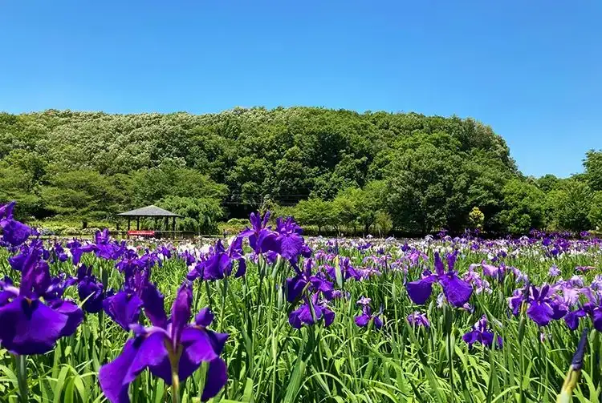

Japan / Tokyo / Higashimurayama
Higashimurayama, Tokyo: things to do, food and stays
Higashimurayama · Tokyo
Higashimurayama
Highlighted on the Tokyo map.

Sights


Dining
Tsuchi-ya
土家

Noodle restaurant in Higashimurayama, Tokyo.
L’AUTOMNE Akitsu honten
ロートンヌ 秋津本店

Sweets and bakery shop in Higashimurayama, Tokyo.
Teuchi Udon Kogera
手打ちうどん こげら

Noodle restaurant in Higashimurayama, Tokyo.
Noguchi Seimenjo
野口製麺所

Noodle restaurant in Higashimurayama, Tokyo.
Men. Don Dining Musha
麺.丼 Dining 夢者

Noodle restaurant in Higashimurayama, Tokyo.
Taguriya Genji
手繰りや 玄治

Noodle restaurant in Higashimurayama, Tokyo.
Kikuya
きくや

Noodle restaurant in Higashimurayama, Tokyo.
Jun Teuchi Sanya Shokudo
純手打ち さんや食堂

Noodle restaurant in Higashimurayama, Tokyo.
Bon Ten Higashimurayama ten
ぼん天 東村山店

Noodle restaurant in Higashimurayama, Tokyo.
Ramen Senmon Ten Kazu Kumegawa ten
ラーメン専門店 和 久米川店

Noodle restaurant in Higashimurayama, Tokyo.
Takagi Nobu
高木のぶぅ

Noodle restaurant in Higashimurayama, Tokyo.
KANTAKA
図書喫茶 カンタカ

Cafe in Higashimurayama, Tokyo.
Yakitori Nojima
焼き鳥野島

Meat restaurant in Higashimurayama, Tokyo.
Yokohama Iekei Ramen Musashiya Akitsu ten
横浜家系ラーメン 武蔵家 秋津店

Noodle restaurant in Higashimurayama, Tokyo.
Masumoan
ますも庵

Noodle restaurant in Higashimurayama, Tokyo.
ICHIGEN CHAN
一元ちゃん

Noodle restaurant in Higashimurayama, Tokyo.
Salaryman
サラリーマン

Seafood restaurant in Higashimurayama, Tokyo.
Hama Meshi Seafood Fish
浜めし 海鮮 ふぃっしゅ

Seafood restaurant in Higashimurayama, Tokyo.
Soumon Kyora Sou Higashimurayama ten
草門去来荘 東村山店

Seafood restaurant in Higashimurayama, Tokyo.
Sawadee Kumegawa ten
サワディー 久米川店

Chinese or Asian restaurant in Higashimurayama, Tokyo.
New Akitsu
ニュー秋津

Noodle restaurant in Higashimurayama, Tokyo.
Motsu Ya Honten
もつ家 本店

Meat restaurant in Higashimurayama, Tokyo.
Gourmand Yama
グルマンやま

Meat restaurant in Higashimurayama, Tokyo.
Menya Takashi
麺屋 敬

Noodle restaurant in Higashimurayama, Tokyo.
Wagashi Tokoro Mochi Man Nishiguchi Hon Sabo Kaze Ryuan
和菓子処 餅萬 西口本店・茶房風柳庵

Sweets and bakery shop in Higashimurayama, Tokyo.
Italian Dining Satoru Akitsu ten
イタリアンダイニング Satoru 秋津店

European restaurant in Higashimurayama, Tokyo.
Spice
すぱいす

Noodle restaurant in Higashimurayama, Tokyo.
Una Sei Honcho
うな正 本町店

Seafood restaurant in Higashimurayama, Tokyo.
Akitsu Saketen Reservation
秋津酒店

Izakaya or bar in Higashimurayama, Tokyo.
Piers
ピアーズ

Chinese or Asian restaurant in Higashimurayama, Tokyo.
Teuchi Soba Shuu
手打ちそば しゅう

Noodle restaurant in Higashimurayama, Tokyo.
Kosegawa
こせがわ

Noodle restaurant in Higashimurayama, Tokyo.
Murayama Kumegawa ten
むらやま 久米川店

Meat restaurant in Higashimurayama, Tokyo.
Shige Ro Sushi
しげ老鮨

Seafood restaurant in Higashimurayama, Tokyo.
Le Fraisalia pâtisserie
ル・フレザリア パティスリー

Sweets and bakery shop in Higashimurayama, Tokyo.
Uogashi
魚がし

Izakaya or bar in Higashimurayama, Tokyo.